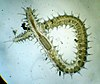

syllidae

Definition: Syllidae, commonly known as the necklace worms, is a family of small to medium-sized polychaete worms. Syllids are distinguished from other polychaetes by the presence of a muscular region of the anterior digestive tract known as the proventricle.Syllid worms range in size from 2–3 mm (0.08–0.12 in) to 14 centimetres (5.5 in). Most syllids are benthic organisms that transition to a pelagic epitoke for reproduction. They are found in all regions of the ocean, from the intertidal zone to the deep sea, and are especially abundant in shallow water.They are found in a range of habitats, moving actively on rock and sandy substrates, hiding in crevices and among seaweeds, and climbing on sponges, corals, hydrozoans, seagrasses and mangroves. They are generalist feeders. A young Syllid was one of the first worms to be found with pollen from seagrass in its stomach, making it a possible pollinator.The proventricle, Syllid worm's most distinctive anatomical feature, allows the worm to feed by sucking due to its pumping action. It also plays a role in hormone production, and thus the worm's sexual development. The proventricle is composed of strirated muscle cells with the longest known sacromeres among animals. The proventricle is usually visible through the body wall.Syllis ramosa was the first polychaete discovered to have a branching body plan. Later, two species of Ramisyllis were discovered to have a branching body plan.
Source: Wikipedia
Wikipedia Page (Something wrong with this association? Let us know.)
Wikidata Page (Something wrong with this association? Let us know.)